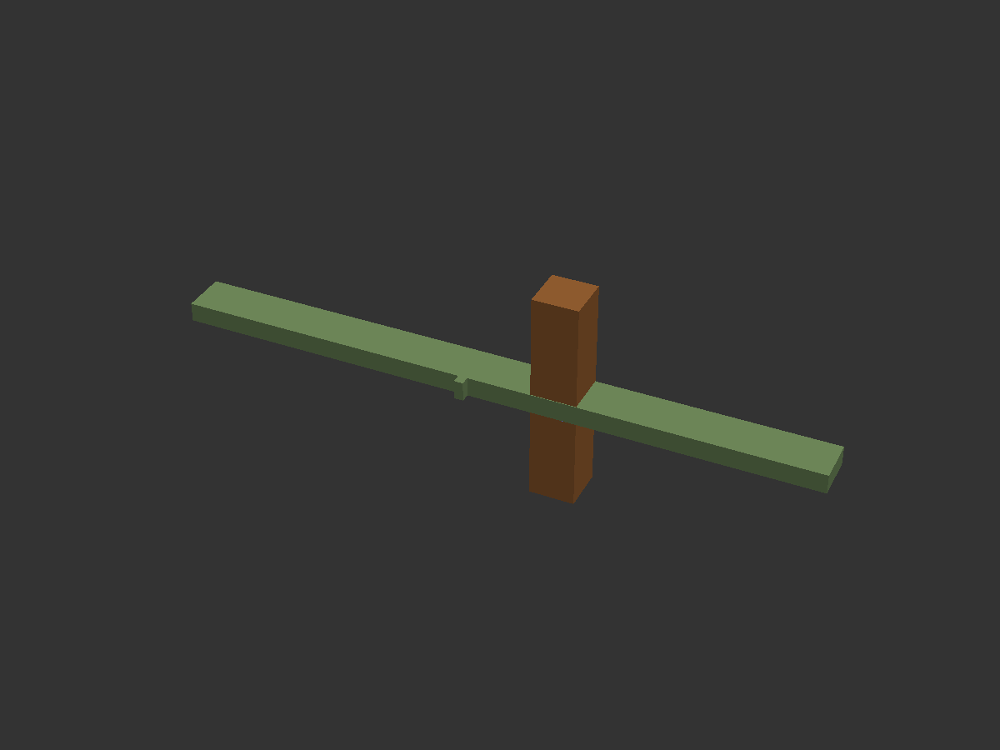
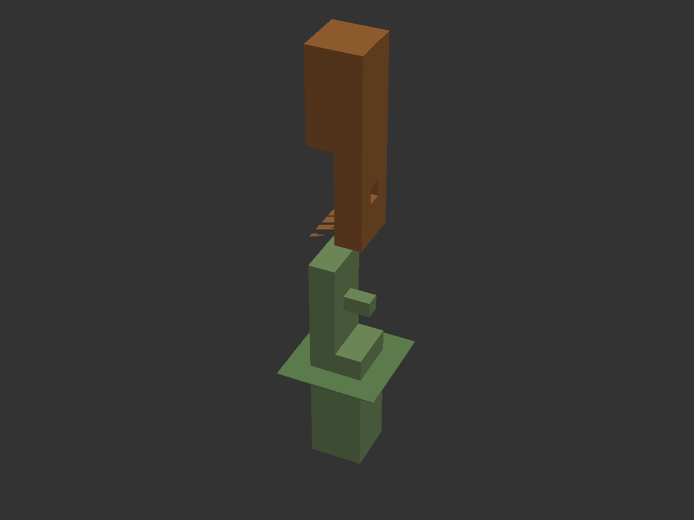
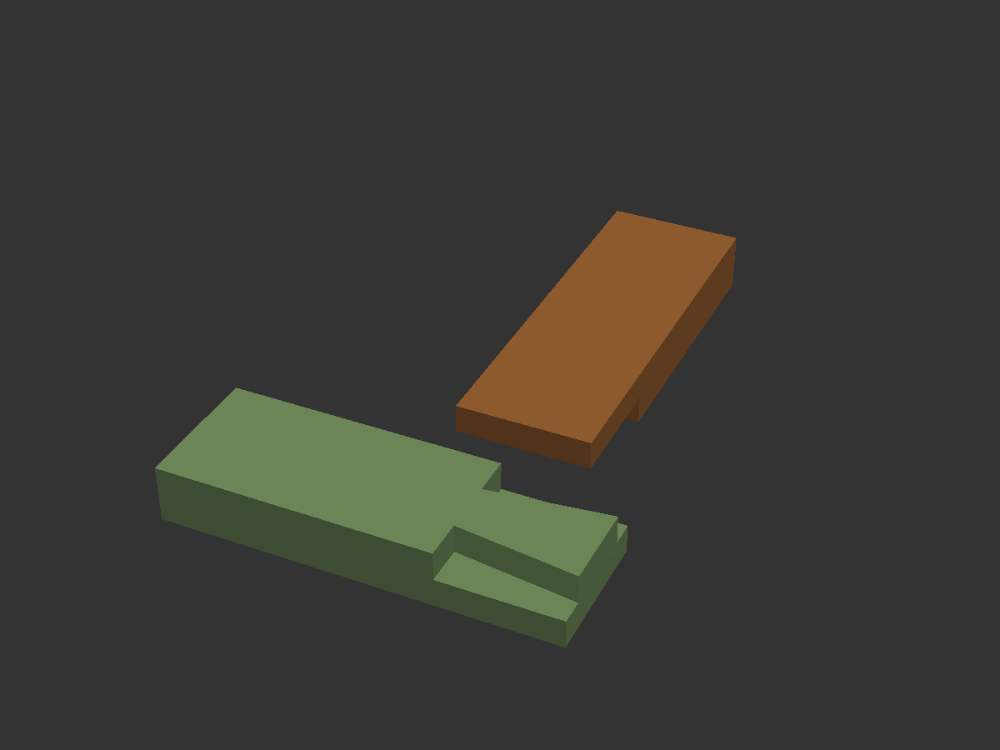
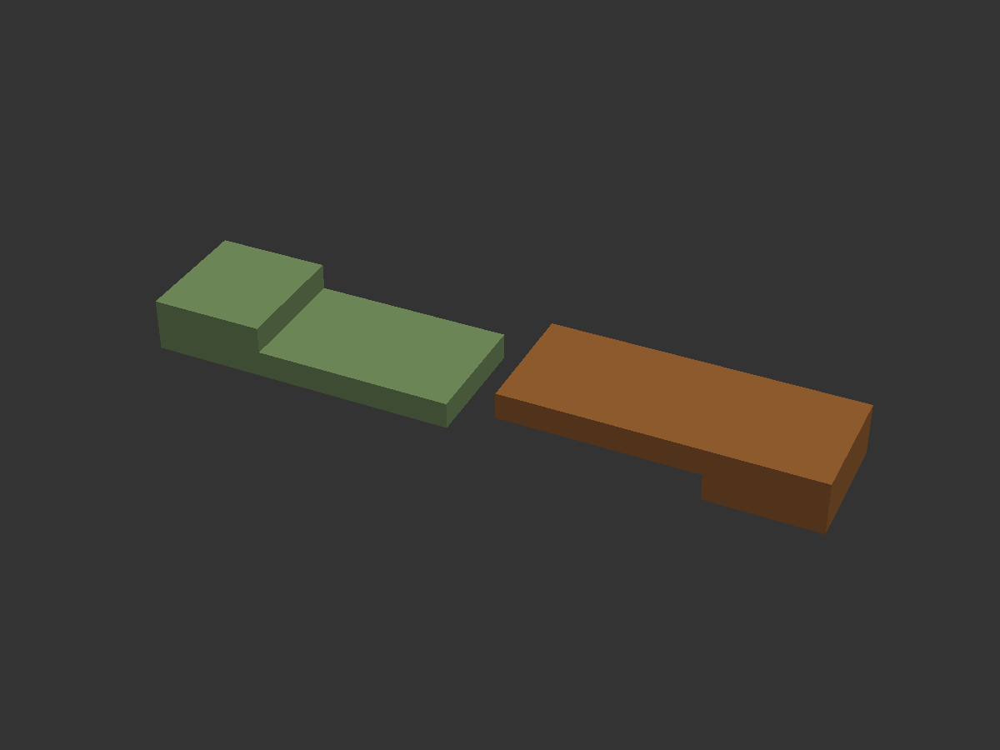
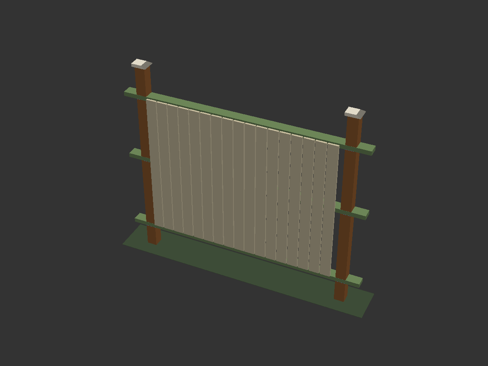

Wind racking
Panel fences act as sails. Nailed butt joints open at the post, rails twist, and the line leans. Through-rails (nuki) and shouldered jaws (watari-ago) turn shear into compression across the post.
Japanese joinery · existing fence · weather-ready
Reengineer the fence you already have into a post-and-through-rail frame that sheds water, resists racking, and repairs in place — cut by hand, locked by wood.
01 — Local elements
Without a site survey, Hashira assumes a temperate residential yard with wind, frost heave, and wet–dry cycling. Tune the matrix to your climate; keep the joint logic.
Panel fences act as sails. Nailed butt joints open at the post, rails twist, and the line leans. Through-rails (nuki) and shouldered jaws (watari-ago) turn shear into compression across the post.
Posts lift and rot at grade. Keep the structural frame above a drained footing; use ne-tsugi to splice a sound upper post onto a replaced butt without rebuilding the bay.
End grain and trapped water kill wood faster than wind. Cap posts, slope shoulders, leave air gaps behind boards, and prefer joinery that sheds instead of cupping water in metal brackets.
Japanese framing expects wood to move. Pegged through-joints tighten under load; leave intentional play at non-bearing faces so summer humidity does not split the mortise cheeks.
If your site is coastal hurricane wind, deep freeze, or arid UV-extreme, keep the same skeleton and upgrade section sizes, footing depth, and species — not the joint vocabulary.
02 — Read the existing fence
Hashira is a reengineering method, not a teardown. Walk the line once with this checklist before cutting a single mortise.
Probe 0–8″ above soil and just below. Soft, hollow, or ant-riddled butts get a ne-tsugi splice or full post reset. Hard heartwood above grade can stay as the new hashira.
Measure center-to-center post spacing, height, and out-of-plumb. Ideal Hashira bays: 6–8 ft. Over 8 ft, add a mid-post or deepen rail section. Mark a string line for the new top of frame.
Decide what remains as cladding only. Existing pickets and boards become non-structural skin. New through-rails carry wind. Never ask old face-nailed 2×4 rails to do both jobs after reinforcement.
Note where splashback, downspouts, and grade slope attack posts. Raise clearances, add gravel collars, and cut drip shoulders on every exposed tenon cheek.
Treat gates as the stiffest frames. Use doubled posts or a torii-like lintel with hozo tenons so the swinging leaf does not rack the adjacent bays.
03 — The Hashira system
Three roles. One load path. Everything else is weather armor.
Convert each bay into a small timber frame. Posts remain the verticals. New rails pass through them. Boards hang as a rain screen — attached to the rails, never asked to brace the line.
04 — Hand-cut joinery kit
Miyadaiku vocabulary, scaled to fence timber. Cut with saw, chisel, and marking gauge — no hidden metal required for the frame.
貫 · Through rail
The backbone of Hashira. A full-section rail passes through a mortise in the post. Friction and optional wedges resist racking; the joint can flex slightly under gusts instead of snapping fasteners.
渡り顎 · Passing jaw
A refined nuki: stepped shoulders / haunches on the rail seat against the post so the bay cannot twist. Use on the mid-rail of wind-exposed runs and beside gates.

ほぞ継ぎ · Mortise & tenon
Classic stopped or through tenon for caps, lintels, and gate frames. Pair with a draw-peg so the shoulder pulls tight as humidity swings.
根継ぎ · Foot splice
Temple repair logic for rotten post butts. Cut away the failed base; splice a new treated or naturally durable stub with interlocking shoulders. Upper hashira and rails stay.

蟻掛け · Dovetail lap
Half-lap dovetail for rail-to-rail meets and corner returns. Tightens under load; useful where a continuous nuki must turn a corner without metal plates.

鎌継ぎ · Sickle scarf
Graceful compression scarf for lengthening rails when a single stick will not span. The sickle hook resists withdrawal; keep scarfs over posts when possible.

04b — OpenSCAD CAD
Hashira models live as OpenSCAD source under fence/cad/, rendered and exported through openscad-mcp (and the local CLI). Tune post size, bay spacing, and explode views with -D variables.

Defaults match ~4×4 posts on 6 ft centers (mm). Change post_w, bay_cc, and rail elevations in hashira_lib.scad or pass variables through the MCP.
Through-rail with optional peg lock.
Shouldered pass-through for twist resistance.
Drawbored mortise & tenon for gates and caps.
Foot splice — replace the butt, keep the post.
Dovetail lap for corners without plates.
Sickle scarf to lengthen rails in place.
openscad-mcp · Cursor
Project .mcp.json launches quellant/openscad-mcp via uv. Requires OpenSCAD on the machine. Re-render everything with the CLI helper when you change parameters.
uv run --with git+https://github.com/quellant/openscad-mcp.git openscad-mcp # or regenerate site assets locally ./scripts/render_hashira_cad.sh # example: wider posts, tighter bay openscad -o fence/cad/exports/bay.stl \ -D 'post_w=140' -D 'post_d=140' -D 'bay_cc=1500' \ fence/cad/bay.scad
06 — Build sequence
Hand-cut joinery rewards patience. Stabilize two posts, thread one set of rails, clad later.
Brace the run. Excavate failed butts. Set new footings below frost with gravel drainage, or sleeve posts in drained concrete with a bituminous break at grade. Splice with ne-tsugi where the upper post is still true.
Story-stick every bay. Mark through-mortises for lower, mid, and top rails. Bore waste, then chisel to the line. Keep cheeks parallel — a twisted mortise binds the nuki and splits under seasonal swell.
Enter rails from the open end of the run or assemble posts onto a pre-threaded stick if resetting a bay. Drive wedges from the weather side so rain pushes them tighter. Drawbore gate frames.
Cap every post with a hozo-tenoned lid or a simple pyramidal cut. Slope exposed rail tops. Oil end grain. Do not trap water with flat metal caps that cup against the post.
Reuse sound boards or cut new verticals (itagaki) / horizontal armor (yoroigaki). Leave 1/4″–3/8″ gaps for airflow. Fasten cladding to rails only — never into post faces in a way that splits mortise cheeks.
06 — Stock & finish
Japanese practice favors hinoki and sugi. In North America, match the role — not the kanji — with local durable species.
| Role | Preferred species | Section (start point) | Notes |
|---|---|---|---|
| Hashira (posts) | Western red cedar, black locust, white oak, cypress | 4×4 min · 6×6 wind / tall | Heartwood only at grade; treat or elevate butts |
| Nuki (rails) | Cedar, cypress, white oak, Douglas fir (clear) | 2×4 to 3×4 | Grain straight; avoid large knots at mortise |
| Pegs / wedges | Oak, black locust, hickory | ⅜″–½″ pegs | Dry stock; slightly harder than frame |
| Cladding | Cedar boards, sugi-style bark panels, bamboo screen | ⅝″–1″ boards | Optional yakisugi char for UV / insect defense |
2 posts (or 1 shared), 3 rails, 4–6 pegs/wedges, 1 post cap pair, cladding set.
Story-stick · mark once · cut the run
Ryoba or panel saw, marking gauge, mortise chisels, mallet, brace/auger, square, sliding bevel, clamps.
No nail gun required for the frame
Penetrating oil or pine tar on end grain; leave faces to silver, or light yakisugi on cladding only.
Re-oil end grain every 18–24 months
This guide is a carpentry design method for residential fences. Verify footing depth against local frost line and any HOA / permit rules before excavating. Structural spans above ~8 ft or retaining-grade loads need an engineer.
Sister design · Buffalo NY
Egyptian battered piers, Roman arch gate and 48″ foundations, Mayan stepped caps — with Hashira nuki rails in the timber bays. Full FreeCAD model and five dimensioned build-plan sheets.
{kind=link}
{kind=link}
{kind=link}
{kind=link}
{kind=link}
{kind=link}
{kind=link}